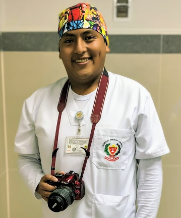

Diseño CAD dental
Diseño digital, planificación y preparación de modelos para fabricación.
PERFIL PROFESIONAL · PUNO, PERÚ
Soy Kenyi Julberth Hancco Quispe, odontólogo y diseñador CAD dental freelance. Integro odontología digital, diseño 3D, programación e inteligencia artificial para crear soluciones aplicadas al sector odontológico.

01 / PROFILE01 / SOBRE MÍ
Mi trabajo conecta el conocimiento odontológico con herramientas digitales para diseñar, planificar y desarrollar soluciones con enfoque práctico.
Como diseñador CAD dental independiente, desarrollo diseños para distintas áreas de la odontología. También exploro el desarrollo de software y la inteligencia artificial como herramientas para ampliar las posibilidades del diagnóstico y la planificación.
Visitar mi web personal ↗Diseño digital, planificación y preparación de modelos para fabricación.
Flujos de escaneo, modelado 3D y planificación odontológica.
Programación, procesamiento de imágenes y prototipos tecnológicos.
02 / EXPERIENCIA
Odontólogo digital
Diseño digital odontológico
03 / HERRAMIENTAS
DOMINIO AVANZADO
Herramientas principales para diseño y planificación CAD dental.
Medit Link · Meshmixer · 3D Slicer · Chitubox
Python · Flask · OpenCV · React · JavaScript · SQL
CAD/CAM · Impresión 3D · Modelado 3D · Archivos STL
04 / PROYECTOS TECNOLÓGICOS
Prototipos y proyectos que exploran la aplicación de tecnología e imagenología en odontología.
Sistema basado en inteligencia artificial para la interpretación de radiografías periapicales.
Ver proyecto ↗05 / LOGROS & PARTICIPACIONES
“Inteligencia artificial y tecnologías digitales aplicadas a la imagenología endodóntica”. Asesora: Dra. Tania Carola Padilla Cáceres.
Primer lugar. Equipo Frontend; solución digital para TECHO México.
Participación con la historia “De odontólogo a programador”.
06 / FORMACIÓN
Universidad Nacional del Altiplano
Periodoncia e Implantología · Turma II
Big Data · CEREM
IBS, España
Ingeniería de Software con IA · SENATI
IDIOMAS
¿TRABAJAMOS JUNTOS?
Disponible para colaboraciones profesionales, proyectos digitales y oportunidades de desarrollo.